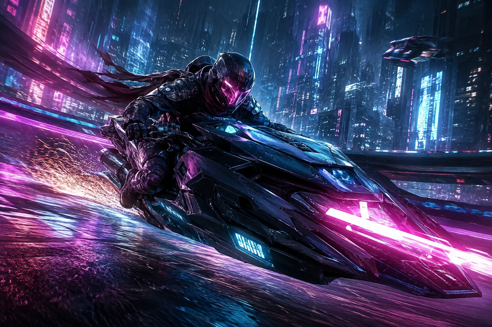
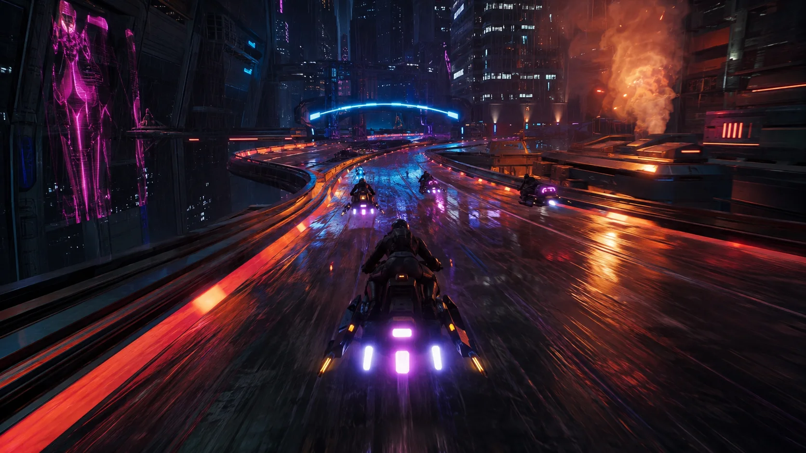

TACTILE RIDES
Distinct vehicles with weight, boost timing, and upgrade paths that change how every route feels.

Burn through a city owned by corporations. Every shortcut is a gamble, and standing still is surrender.
FOLLOW DEVELOPMENTBuild your ride, recruit a crew, and tear across a vertical neon metropolis where routes shift, rivals learn, and every race changes your standing in the underground.

Distinct vehicles with weight, boost timing, and upgrade paths that change how every route feels.
Street level, rooftops, tunnels, and dangerous shortcuts reward mastery and split-second choices.
Crews remember your wins, losses, and betrayals as you rise through the city.